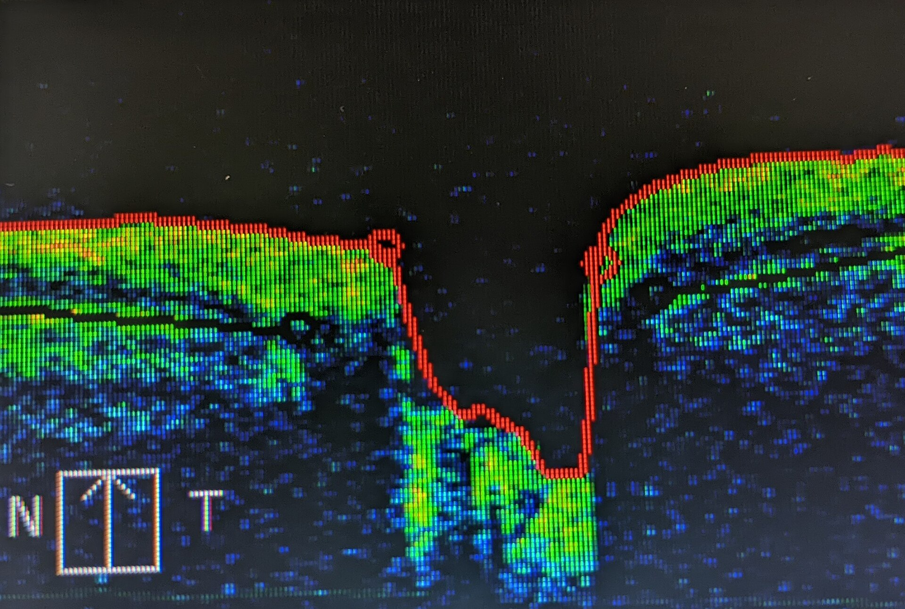
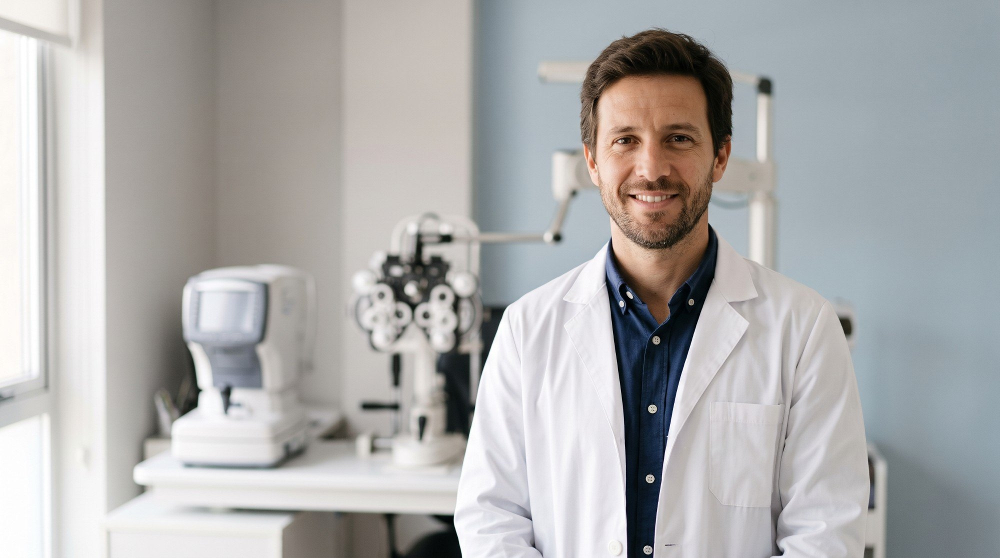
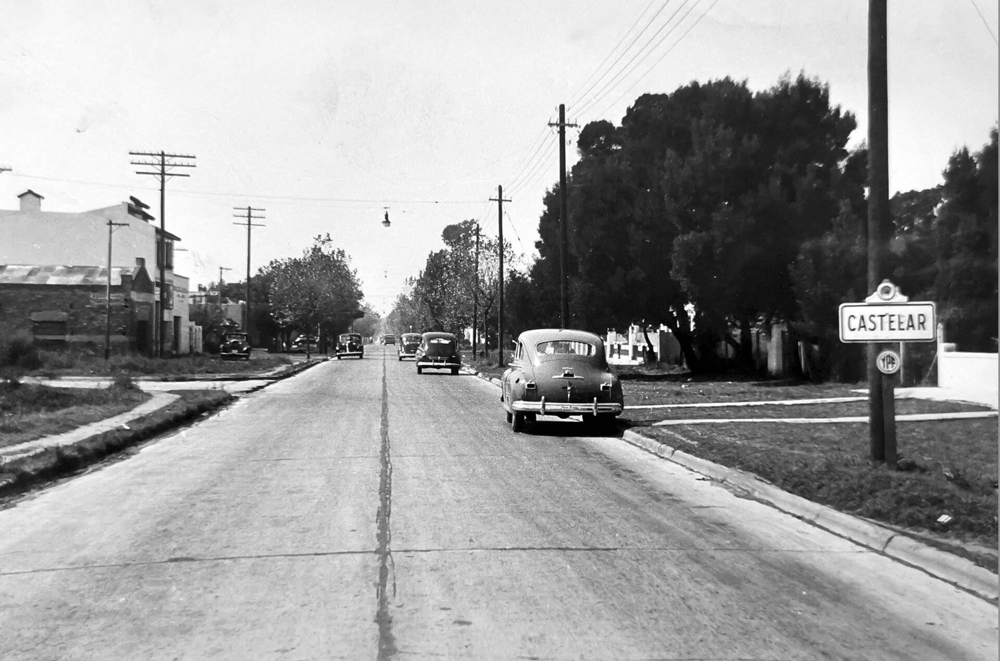

Fondo de ojo
Retina, mácula y nervio óptico. Clave en diabetes e hipertensión.
Consultas, estudios y cirugía de los ojos para adultos y chicos. Reservá tu turno online en dos minutos.
La graduación de cada ojo en segundos, y después la confirmamos en el consultorio.
Cada resultado en palabras simples, con las imágenes de tus propios estudios.
Anteojos, láser o cirugía, con el mismo equipo que te diagnosticó.
Consultas, estudios complementarios y cirugía, para adultos y chicos. A pocas cuadras de la estación Castelar.
Desde el control anual hasta la cirugía. Elegí una afección para ver cómo la tratamos.
El cristalino se opaca y la visión se nubla de a poco. Se resuelve con una cirugía ambulatoria de unos 20 minutos.
Señales: visión velada, colores apagados, encandilamiento de noche.
Reservar evaluaciónDaña el nervio óptico sin dar síntomas al principio. Se controla con gotas, láser o cirugía.
Se detecta midiendo la presión del ojo y con un campo visual.
Reservar controlDespués de los 40 cuesta enfocar de cerca. Te indicamos la corrección justa para leer, la computadora o ambas.
Señales: alejar el celular para leer, cansancio visual al final del día.
Reservar controlMiopía, astigmatismo e hipermetropía. Los medimos con autorefractómetro y los confirmamos en la consulta.
Señales: ver borroso de lejos o de cerca, dolor de cabeza al leer.
Reservar controlTambién llamada ojo vago: un ojo no desarrolla toda su visión. Tratada en la infancia tiene muy buen pronóstico.
Se detecta en los controles infantiles, aunque el chico no se queje.
Reservar turno infantilLos ojos no miran en la misma dirección. Lo evaluamos en chicos y adultos, con o sin cirugía.
Señales: un ojo que se desvía, visión doble, inclinar la cabeza para ver.
Reservar evaluaciónLa diabetes puede dañar la retina sin síntomas. Un fondo de ojo anual la detecta a tiempo.
Recomendado: fondo de ojo una vez al año si tenés diabetes.
Reservar fondo de ojoLa escena del autorefractómetro con cuatro afecciones frecuentes. Arrastrá la línea para comparar con la visión corregida.
El cristalino se opaca. Todo se ve velado, amarillento y con poco contraste, sobre todo de noche.
Simulación ilustrativa. No reemplaza una consulta oftalmológica.
Los hacemos en el mismo consultorio, el mismo día cuando es posible.
Retina, mácula y nervio óptico. Clave en diabetes e hipertensión.

Tomografía de retina y nervio óptico, capa por capa, en pocos minutos.
Mide la visión periférica. Es el estudio de control del glaucoma.
La graduación de cada ojo, medida en segundos.
Forma y espesor de la córnea, antes de cirugías y lentes de contacto.
La presión del ojo, en cada control anual.
Facoemulsificación con lente intraocular, ambulatoria y con anestesia en gotas.
También tratamos glaucoma con láser y seguimos cada caso antes y después.
Los chicos casi nunca dicen que ven mal. Por eso los controlamos aunque no haya síntomas, con turnos más largos y sin apuro.
Oftalmología y dermatología en el mismo consultorio, con una sola historia clínica.

Oftalmología
Médico oftalmólogo. Atiende adultos y chicos: controles, graduación y seguimiento de enfermedades de los ojos.
Reservar con el Dr. RolónOftalmología
Médico oftalmólogo. Atiende adultos y chicos: controles y graduación, estudios complementarios, glaucoma, controles para diabetes y cirugía de cataratas.
Reservar con el Dr. GabrielliDermatología
Médica dermatóloga. Consultas de dermatología clínica para adultos y chicos.
Reservar turnoElegís especialidad, profesional y horario. La confirmación llega al instante.
Demostración: los horarios son de ejemplo y no se guardan datos.
Desde esta página, en Reservá tu turno: elegís especialidad, profesional, día y horario, y recibís la confirmación por email. Para dudas antes de reservar, escribinos por WhatsApp al 11 2353 2673.
Trabajamos con las principales obras sociales y prepagas, y también atendemos de forma particular. Al reservar elegís la tuya y te avisamos si hace falta autorización previa.
DNI, credencial de la obra social, tus anteojos o lentes de contacto y los estudios anteriores. Si te dilatan las pupilas, conviene venir acompañado y no manejar a la vuelta.
Una vez al año a partir de los 40, o antes si tenés diabetes, presión alta o antecedentes de glaucoma en la familia. En chicos, a los 6 meses, a los 3 años y antes de empezar la escuela.
No. Se hace con anestesia en gotas y una sedación leve. Dura unos 20 minutos y la mayoría de los pacientes vuelve a su casa en el día.
Con el enlace del email de confirmación podés cancelar o elegir otro horario hasta 24 horas antes.

Arriba, la calle Mitre hacia 1950. Estamos a pocas cuadras de la estación Castelar del tren Sarmiento y atendemos a pacientes de Morón, Ituzaingó, Haedo y Hurlingham.
Av. Santa Rosa 1137
Castelar, Buenos Aires
Lunes a viernes, 9 a 19 h
Sábados, 9 a 13 h